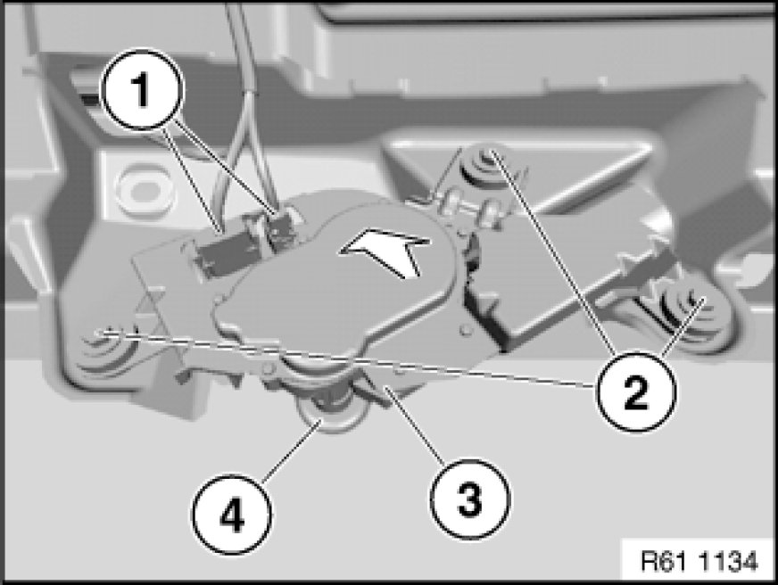

Removing and Installing/Replacing Rear Window Wiper Motor
61 62 060 - Removing and installing/replacing rear window wiper motor

Necessary preliminary tasks:
- Remove wiper arm for rear window Replacing Wiper Arm for Rear Window Wiper.
- Remove panel for rear lid .

Unfasten plug connections (1) and disconnect.
Note:
Secure rear window wiper motor (3) against falling out.
Release screws (2).
Installation:
Tightening torque 61 62 8AZ 61 62 Tailgate Window Wiper.
Remove rear window wiper motor (3) in direction of arrow.
Installation:
Replace grommet (4) if necessary.